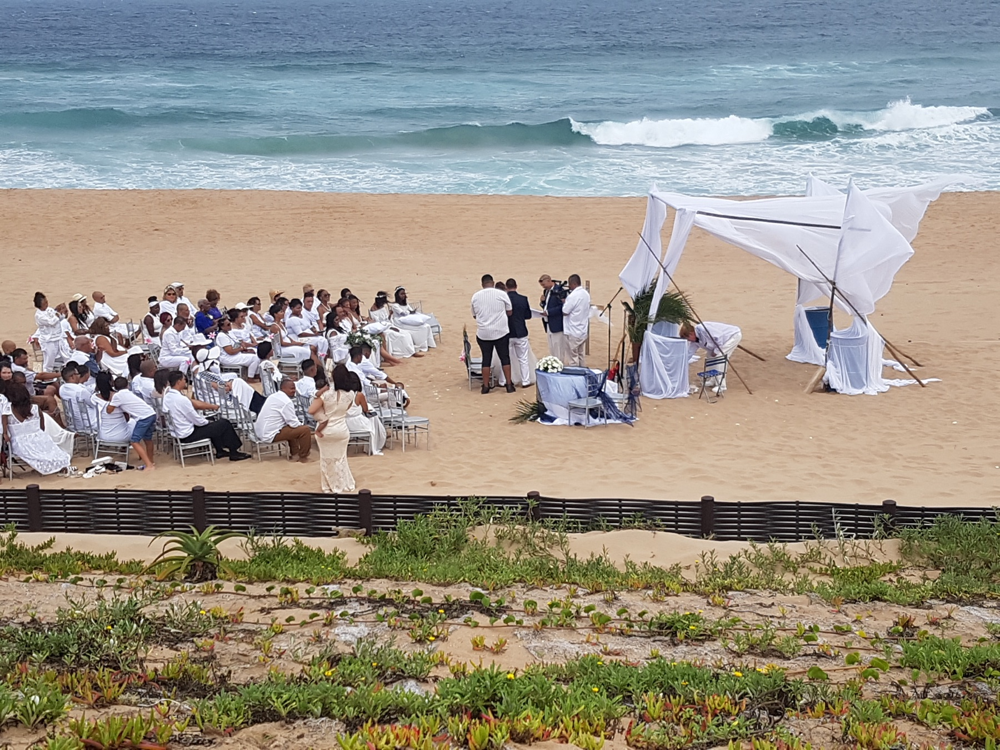

uShaka Marine World has more than one way to visit. If you are staying on the Bluff, choose the ticket that matches what you want to do rather than buying the broadest pass by habit.

Pick an aquarium visit if time is tight
The operator has an Aquarium Only ticket as well as Sea World entry. Aquarium Only is listed at R138 for adults, children and seniors. It covers the shipwreck-themed aquarium and does not give you a full water-park day.
We would choose this when you want marine life to be the main event but do not want to spend the whole day at uShaka. Ask the ticket office what is included before paying.
Sea World offers a wider visit
Sea World is listed at R267 per adult and R216 for children and seniors. The operator says this includes the aquarium and live shows. Children under three enter free under its current rate rules.
If a show matters to your group, check the current show programme before buying. Animal presentations may change, and the operator says live-show times can vary.
Wet ’n Wild needs its own check
Wet ’n Wild has water slides and pools. Its listed price is R267 per adult or R216 for children and seniors, with children under three free. In the current off-peak timetable, the water park opens from Wednesday to Sunday, 10:00 to 17:00, and closes on Mondays and Tuesdays.
That rule can change how you plan a weekday stay. A Tuesday outing may still work for the aquarium, but it is not the day to promise children a water-slide session. Confirm the latest calendar.
Do not confuse park hours with ticket access
uShaka lists general park hours from 09:00 to 17:00, but each ticket type has its own access rules. The operator notes that Aquarium Only entry may differ in peak periods, with later ticket sales listed for peak days.
Our rule is to pick the experience first, then check the day's ticket access. Do not assume the main gate opening time answers every activity question.
Check the total for your group
Use the official rates and times page to add up your own tickets. As an example, two adult Sea World tickets at the listed R267 rate total R534, before food, transport or extras.
These are uShaka's posted prices effective 1 September 2026 and may change. They are not 4Shore room rates. A family may save money by choosing the aquarium alone when slides and shows are not part of the plan.
Make the Bluff-to-uShaka trip work
From 4Shore Guesthouse, check traffic and your route before leaving for uShaka Marine World on Durban's Point waterfront. If you drive, check parking information. If you use a booked ride, set a meeting point for the return.
Our Durban transport guide can help you compare options. If weather is poor, the aquarium may suit the day better than slides, but confirm which parts of the park are operating.
One ticket decision beats a packed schedule
For younger children, choose the area they are keen to visit, then allow time for breaks. For adults, ask whether you are paying for displays, shows or swimming. There is no need to pay for all three if you will only use one.
We think the best value comes from matching the ticket to the visit, not choosing the biggest pass by default. Check the current operator page on your travel day and keep the rest of the day flexible.
FAQ: uShaka tickets from the Bluff
What is the cheapest listed uShaka ticket?
The operator's September 2026 rates list Aquarium Only at R138 per adult, child or senior. Check current rates before visiting.
Does Sea World entry include Wet ’n Wild?
The operator lists Sea World and Wet ’n Wild as separate ticket types. Check combinations directly before paying.
Is Wet ’n Wild open on Tuesdays?
Under the listed off-peak timetable, Wet ’n Wild is closed on Mondays and Tuesdays. Check for holiday or seasonal changes.
Can toddlers visit free?
The official rates list free entry for children under three in the stated ticket categories. Check age rules at the ticket office.
Ask about your Bluff stay
Winston is the owner and host of 4Shore Guesthouse and the person guests can contact directly about rooms, rates, availability and practical questions. 4Shore is at 28 Foreshore Drive, Ocean View, Bluff, Durban, KwaZulu-Natal, 4052. Call +27 83 254 4825 or email 4shoredurban@gmail.com.